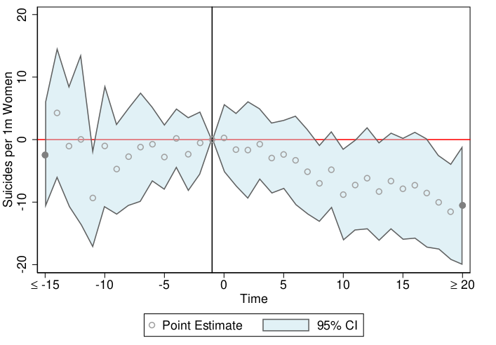
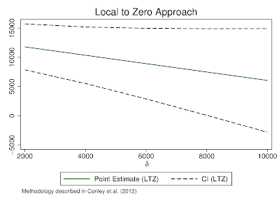
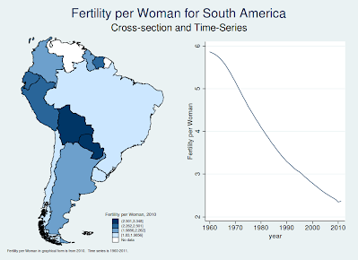
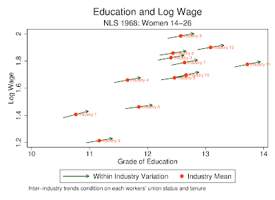
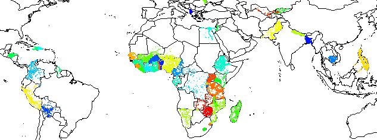

| Home | Research | Computation | Books | Teaching | CV |
|---|
sdid, written with Daniel Pailiñir, is a package for estimating, plotting, and conducting inference using panel event studies designs in Stata. This package and the is described in this working paper or at the Stata Journal. Much more information on this command can be found at Daniel's github page.
Install from the command line in Stata typing ssc install sdid.
rwolf2 provides a more flexible syntax to calculate Romano-Wolf stepdown p-values for multiple hypothesis testing. The program implements the same Romano and Wolf multiple hypothesis correction as in rwolf (see below), but provides a considerably more flexible syntax, allowing for more simple implementations of a range of procedures, such as corrections based on differing underlying models, specifications, weighting schemes and so forth. A discussion of the difference between rwolf2 and rwolf as well as documentation of their identical outcomes in cases where identical corrections are implemented is avaialable here.
Install from the command line in Stata typing ssc install rwolf2.
Slides from a presentation at the Stata Economics Symposium, 2021 touching on topics related to multiple hypothesis testing (and the rwolf routines) are available here. Related code is available at the following github link: https://github.com/damiancclarke/multHypStata.
eventdd, written with Kathya Tapia Schythe, is a package for estimating, plotting, and conducting inference using panel event studies designs in Stata. This package and the panel event study methodology is described in this working paper. The graphical output from the command is as follows:

Install from the command line in Stata typing ssc install eventdd.
NOTE (December 30, 2020): Version 3.0 of the command has an altered syntax meaning that code will need to be slightly altered if you wish to replicate results created with previous versions of the command. Specifically, the current version of the command uses "leads(#)" to refer to pre-event coefficients, and "lags(#)", to refer to post-event coefficients. Previously this was switched in the syntax. Thus, to ensure backwards compatability, if using the current version of the command and running code written with a previous version of the command, simply change around the values in leads() and lags(). This change will only affect your code if using these two options of the command. If, however, you would prefer to use the previous version of the command to ensure backwards compatability without changing any code, simply download and unzip this file and ensure its contents are located in your current working directory or Stata's PLUS directory (located by typing sysdir in Stata).
rwolf calculates Romano and Wolf's (Econometrica 2005; JASA 2005) stepdown adjusted p-values to correct for multiple hypothesis testing. This program follows the algorithm described in Romano and Wolf (Statistics and Probability Letters 2016), and provides a p-value corresponding to each of a series of J independent variables when testing multiple hypotheses against a single dependent (or treatment) variable. The rwolf algorithm constructs a null distribution for each of the J hypothesis tests based on Studentized bootstrap replications of a subset of the tested variables. Full details of the procedure are described in Romano and Wolf (2016).
An example of this procedure is provided in Clarke and Mühlrad (2016). Please see this paper for a discussion of the command.
Install from the command line in Stata typing ssc install rwolf.
NOTE: There has been a bug fix in the current version of the code which affects p-values reported when using clustering with a block bootstrap. For full details please see here.
plausexog implements Conley et al.'s (2012) plausibly exogenous bound estimation in Stata. This allows for statistical inference when a researcher believes that a potential instrumental variable (IV) may be 'close to' but not precisely exogenous. This package implements a number of methods described by Conley et al., allowing for the relaxation of the traditional exclusion restriction in IV methods.
This extends the original Conley at el. code (available on Christian Hansen's webpage) to deal with graphing, all distributions, and a wide range of data scenarios in Stata. I am grateful to Christian Hansen for providing very useful comments. Additiional documentation and details are available in Clarke and Matta (2018), and a typical output is included below:

Install the most recent version directly from the command line in Stata typing ssc install plausexog.
**NOTE: Updated June 2017 to simplify syntax and add support for simulation-based estimates based on arbitrary (non-normal) violations of the exclusion restriction. If you wish to use the earlier version which guarantees backwards compatability, this can be installed directly in Stata by typing net from https://www.damianclarke.net/stata followed by net install plausexog.
imperfectiv (written with Benjamín Matta) estimates bounds using "Imperfect Instrumental Variables" (IIV) as developed by Nevo and Rosen (2012). This allows for inference based on instrumental variable estimates, however, with weaker assumptions than instrumental exogeneity. Namely, the exogeneity assumption of typical IV estimates is replaced with an assumption about the sign of the correlation between the instrument and unobservables.
A description of how to implement these bounds, as well as a discussion of IV bounds more generally, is available in Clarke and Matta (2018).
Install the most recent version directly from the command line in Stata typing ssc install imperfectiv.
genspec is an algorithm for general-to-specific model prediction in Stata. It is defined to search a large number of explanatory variables, and from these explanatory variables select the 'best' model based upon their relevance and power in explaining the dependent variable of interest. genspec implements a series of tests and search paths as outlined in the (growing) econometric literature on general-to-specific modeling. For further details see "General to Specific Modeling in Stata" (free to download).
Install the latest version directly from the command line in Stata typing ssc install genspec.
worldstat is a module which allows for the current state of world development to be visualised in a computationally simple way. worldstat presents both the geographic and temporal variation in a wide range of statistics which represent the state of national development. While worldstat includes a number of "in-built" statistics such as GDP, maternal mortality and years of schooling, it is extremely flexible, and can (thanks to the World Bank's module wbopendata) easily incorporate over 5,000 other indicators housed in World Bank Open Databases. Program output in Stata:

Install directly from the command line in Stata typing ssc install worldstat.
arrowplot creates graphs showing inter- and intra-group variation by overlaying arrows for intra-group (regression) trends on a scatter plot. This is similar to the Stevenson-Wolfers happiness graphs. Program output is below:

Install directly from the command line in Stata typing ssc install arrowplot.
erate (written with Pavel Luengas Sierra) is a module which allows exchange rate conversion between any two currency pairs by consulting google's currency conversion tool to give up-to-date (up-to-minute) rate. Exchange rates are automatically saved as an rlist and are readily accessible for future calculations. Alternatively, the user can store results as variables for use in data manipulation involving exchange calculations.
Install directly from the command line in Stata typing ssc install erate.
mergemany is an extension to the command merge, providing a flexible way for many 'using' datasets to be merged into one final dataset. Merges can be performed based upon a user-defined list of files, by using the numerical regularity of file names, or by including all datasets of a given type stored in a single directory. mergemany also allows the user to import and merge and arbirtrary number of .dta or non .dta in a single step.
Install directly from the command line in Stata typing ssc install mergemany.
ping is a simple program to determine whether Stata is able to connect to the internet. It is intended for use in scripts or programs where the user wishes to determine if internet connectivity is available prior to running a command (such as webuse, ssc, and other similar functions). The user simply needs to type 'ping' at the command line to run, and is returned r(ping)="Yes" in an rlist if connected.
Download ado here.
My work with Sonia Bhalotra on twin endogeneity and on maternal mortality uses cross-country data provided by the Demographic and Health Surveys. These are a set of surveys collected in over 80 developing countries over 20+ years. The cross-country dataset used must be constructed from approximately 1600 individual survey databases which are freely available to download (by application) at https://dhsprogram.com/data/. Here I provide files which automate this process of downloading, unzipping, appending and merging the DHS country data. This process requires two programs: a python script DHS_Import.py and a Stata file DHS_multicountry.do, along with a text file DHS_Countries.txt which should be saved in the folder where the programs are saved. These programs are flexible and should run on any operating system provided access to the internet is available and python is installed. For full details and instructions see the pdf document attached here.
For the latest version (which also downloads GIS data -- see below for coverage), download from here. Update available soon.

The United States National Center for Health Statistics (NCHS) makes available data for all births and fetal deaths occurring in the USA each year. For births, this data is available from 1968-2012 (early years are a 50% sample), and for fetal deaths from 1982-2012. This data is stored as fixed width text files (originally electronic tape). In order to read these files in to Stata, a dictionary file is required, which allows for crude text registers to be converted to Stata's dta format. The NBER makes available dictionary files for birth data (here), however, as far as I know, no similar resource was available for the fetal death files.
I have written dictionary files to read fetal death data into Stata. The original fixed width text files of public use microdata can be downloaded from the USA CDC website. To convert this microdata to a Stata format (which can then be exported to csv for use in other languages), the following files should be downloaded:
README.txt
fetlNVCS.do
dictionaryFiles.zip
The README file contains instructions on how to run these files. It is reasonably simple, and just requires downloading the microdata, and then changing one local in the fetlNVCS.do file based on the location of the data on the user's machine. Upon running the do file in Stata, a full set of dta files will be produced (one per year), which contains all variables and observations in the familiar Stata format. The most updated version of these files are also available on github.
The National Health Interview Survey (NHIS) has been run in the USA since 1957 (more details here). Data is made available online at the CDC website in fixed width text file format. These can be read in to Stata format using dictionary files, which are made available for certain years online at the CDC website or at NBER. However, no centralised files are available for all years (since 1997 when the survey changed). Here I make available (thanks also to the work of Yu-Kuan Chen), full files to download all data automatically, and to read these all into Stata with two or three commands. All that is required to download and import all data to Stata format is Python (if you wish to download data automatically), and Stata to read crude .dat files to Stata's dta format.
Full details are available in the README file in the folder below explaining comprehensively how to run these programs on Windows, Mac, or Unix operating systems. Apart from this, all that is required is the Python file NHISprocess.py in the zipped folder. If you just wish to download the dictionary files for Stata (1997-2013), they are available here. Files are also available on my github account, and are distributed for free use and alteration for any reason under the GNU General Public License.